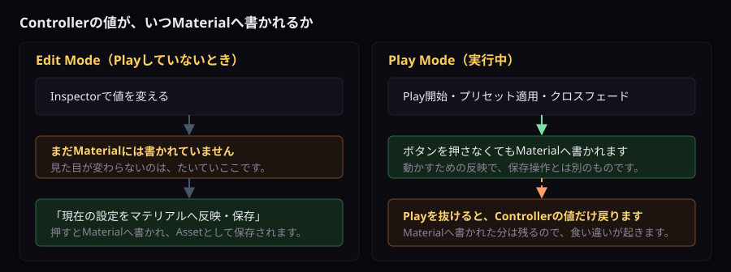

見え方を決める
ControllerのInspector
10個の折りたたみの構成と、設定を保存するボタンの使い方です。
ControllerのInspectorの使い方
設定項目は10個の折りたたみに分かれています。最初は「1. 基本設定・電源・対象Material」だけが開いています。 導入だけならここしか触りません。
- HierarchyでControllerが付いたGameObjectを選びます。設定済みサンプルなら
MirrorBallLight_ConfiguredSampleです。 - Inspectorの上にある「すべて開く」「すべて閉じる」で、10個の折りたたみをまとめて操作できます。必要な番号だけ開くほうが探しやすくなります。
- 設定を変えます。
- Inspectorの一番下にある「現在の設定をマテリアルへ反映・保存」を押します。Edit Modeでの変更は、これを押してはじめてMaterialへ保存されます。
Play Modeでは、ボタンを押さなくてもMaterialへ反映されます。 Play開始時と、ライブプリセットの適用中・クロスフェード中は、Controllerがそのときの設定をMaterialへ書きます。これは実行のための反映で、Edit Modeでの編集結果を保存する操作とは別物です。 編集した設定を残すには、Play Modeを抜けてからこのボタンを押してください。
折りたたみの開閉は、Unityを開いている間だけ覚えています。 Unityを起動し直すと、また「1. 基本設定」だけが開いた状態に戻ります。設定が消えたわけではありません。
10個の折りたたみ
| 番号 | 中身 | 説明のあるページ |
|---|---|---|
| 1 | 基本設定・電源・対象Material | このページ |
| 2 | ライブプリセット | プリセット |
| 3 | アバターへの実光反映（PC向け） | このページ |
| 4 | ミラーボール本体ファセット | このページ |
| 5 | 回転・反射・カラー | 反射・光点 |
| 6 | AudioLink連動 | AudioLink |
| 7 | 光点・形状・ランダム点灯 | 形状・Cookie |
| 8 | 高度な投影・Sceneプレビュー | 形状・Cookie |
| 9 | VRCLightVolumes・LTCGI連携 | 連携 |
| 10 | 最適化・診断 | このページ／最適化・対処 |
Inspectorの下に出る警告
必須の設定が空のとき、保存ボタンの下に出ます。赤はこのままでは動きません。
| 表示 | 意味 | 対処 |
|---|---|---|
| ミラーボール本体が未設定です | 赤（エラー） | 1番の「ミラーボール本体」へ回転の基準にするTransformを入れます |
| 反射を表示するマテリアルが未設定です | 黄（警告） | 1番の「対象マテリアルをシーンから自動検出」を押します |
変えたのに見た目が変わらないとき
- 「現在の設定をマテリアルへ反映・保存」を押したかを確かめます。いちばん多い原因です。
- 壁を増やした後なら、先に「対象マテリアルをシーンから自動検出」を押します。一覧に無いMaterialへは書かれません。
- Play Mode中に変えた値は、Play Modeを抜けると元に戻ります。 ただしMaterialやTexture Import設定のようなアセットそのものへの変更は残ります。 Play中に押した「現在の設定をマテリアルへ反映・保存」の結果は残り、Controllerの設定値だけが戻る、という食い違いが起きます。設定はPlay Modeを抜けてから変えてください。
- それでも変わらなければ、10番の「診断・最適化ウィンドウを開く」で原因を探します。

1. 基本設定・電源・対象Material
| 表示名 | 初期値／選択 | 効果 |
|---|---|---|
| 動作範囲 | グローバル | ローカルは自分だけ、グローバルは電源状態を全員へManual Syncします。 |
| 電源状態 | ON | 反射、本体連動、実光を点灯／消灯します。 |
| このオブジェクトをクリックして切替 | ON | Controller GameObjectへのInteractで電源を切り替えます。Colliderが必要です。 |
| 消灯中は回転を停止 | ON | OFF中の回転位相進行を停止し、再点灯時に続きから回します。 |
| 電源フェード時間（秒） | 0.5 / 0–5 | 点灯と消灯を滑らかに補間します。0は即時です。 |
| ミラーボール本体 | 必須 | 位置・回転の基準Transformです。光点投影と表示回転の中心になります。 |
| 照射スポットライト（任意） | 任意 | 投影方向と位置の基準です。未指定時はボール位置と下向きを使用します。 |
| 反射を表示するマテリアル | 配列 | Controllerが値を書き込むSurface Material一覧です。 |
対象マテリアルをシーンから自動検出
シーン内の対応Shaderを使うMaterialを、非アクティブObjectも含めて重複なしで検出し、一覧を置き換えます。新しい壁やガラスを追加した後に実行します。
Controller連動とMaterial直編集
- Controllerの対象Materialへ登録したSurfaceは、色・明るさ・共通AudioLink・光点・Cookie・距離・Texture参照・共通Keywordを更新されます。
- Base Texture、Normal Map、基本色、金属感、滑らかさ、Material個別AudioLinkマスクと個別発光パターンはMaterial側で設定します。
- 本体は「Controllerの色・電源・AudioLink設定と連動」がONの時だけ演出値が同期します。
- Edit Mode変更をAssetへ残すには「現在の設定をマテリアルへ反映・保存」を押します。